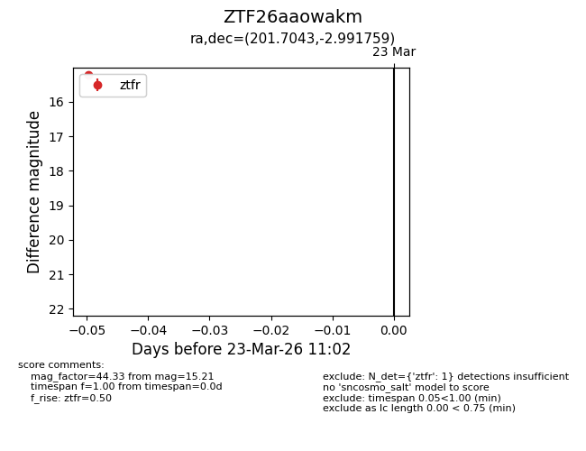
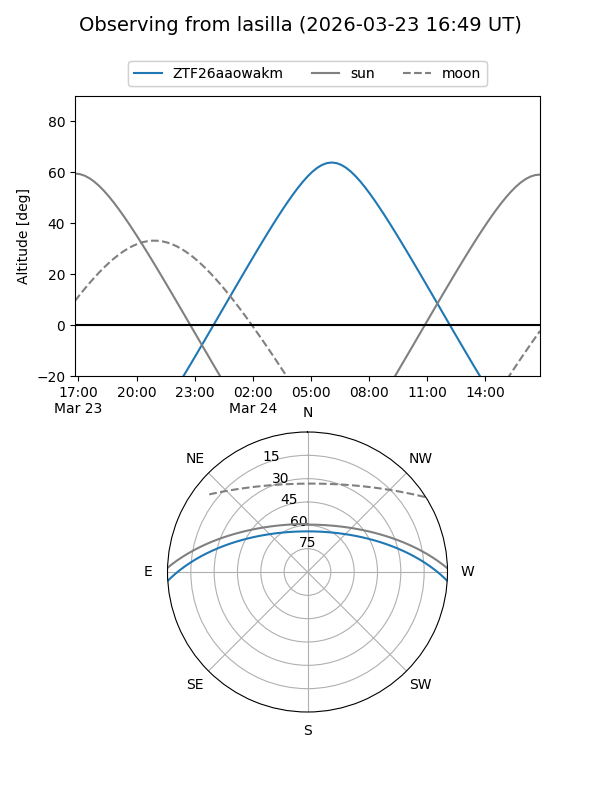
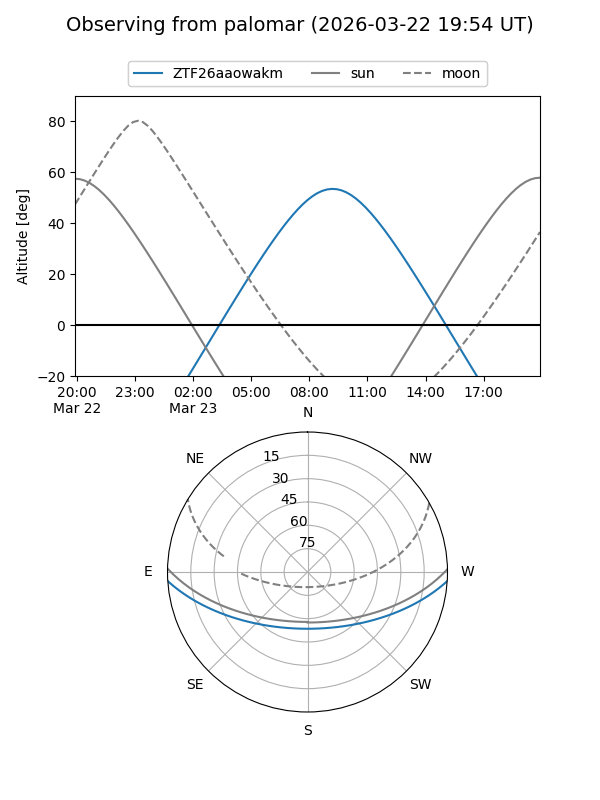

ZTF26aaowakm
Target ZTF26aaowakm at 2026-03-23 11:04
Aliases and brokers:
FINK: link
Lasair: link
ALeRCE: link
alt names
ZTF26aaowakm (ztf,fink_ztf)
Coordinates:
equatorial (ra, dec) = 201.7043,-2.99176
equatorial (HMS+DMS) = 13:26:49.03,-02:59:30.33
galactic (l, b) = (320.1201,+58.69432)
Flags:
Photometry:
last ztfr=15.21
1 ztfr detections
Lightcurve

Visibility


Additional plots